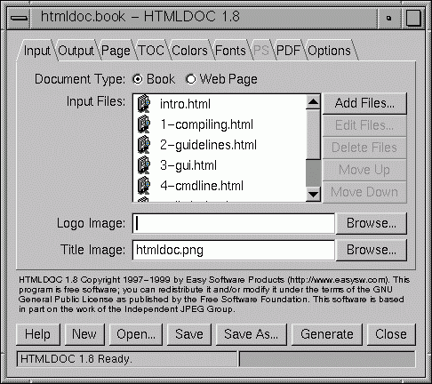
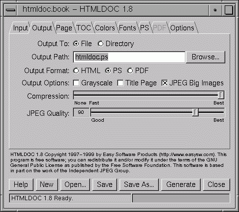

This chapter describes how to start HTMLDOC and convert HTML files
into PostScript and PDF files.
Starting HTMLDOC
To start HTMLDOC under UNIX type:
% htmldoc ENTER
Choose HTMLDOC from the Start menu
(Figure 1) to start HTMLDOC under Windows.
|

Figure 1 - Starting HTMLDOC under Windows
|
Choosing a HTML File
The HTMLDOC window (Figure 2) shows the list of input files that
will be converted. Start by clicking on the Web Page radio
button to specify you'll be converting a single HTML file.

Figure 2 - The HTMLDOC Window
Then choose a file for conversion by clicking on the Add
Files... button. When the file chooser dialog appears (Figure 3),
click on the HTML file you wish to convert from the list of files and
then click on the OK button.

Figure 3 - The File Chooser Dialog
Setting the Output File
Now that you've chosen a HTML file to convert, click on the Output
tab to set the output file (Figure 4). Type the name of the output file into
the Output Path field or click on the Browse... button
to select the output file using the file chooser.

Figure 4 - The Output Tab
Generating the Document
Once you have chosen the output file you can generate it by clicking on the
Generate at the bottom of the HTMLDOC window. When the
conversion is completed you can open the PDF file that is produced using
Adobe Acrobat Reader or any other PDF viewing application.